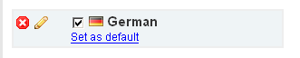

LiveCart supports multiple languages for the same shop / system, in order to adjust your store for other languages you have to prepare translations. Translating a language includes interface elements and all the available stock information (description, details, for instance) (This may seem overhelming at first but as you will see there a couple of handy tools to help you deal with interface translations (see LiveTranslation))
LiveCart supports multiple languages for the same system, which enables you to adjust your shop for international usage. You can translate both interface information (menus, captions, instructions, etc.), as well as most of the data, which is stored in the system, like product descriptions, category names and others. This may seem overhelming at first but as you will see there a couple of handy tools to help you deal with interface translations (see Live Translation).
Adding a language is a one step task. Simply select language from the list and click OK. Added languages appear below automatically.
To translate a language proceed to the Language translation page. To do this hover over the language and click a "pen" icon:
To apply new language to the interface, click Change Language in the LC's main window and choose a language from the list displayed.
Note: main language of the interface holds definitions of all the elements (menius, buttons, etc) while the default language defines stock info (details, description, etc.)
Note2: if the language is not fully translated, ...
To reorder languages click on any language and drag it around to set the preferred arrangement (items to set the appropriate order) (Language arrangement affects the order in which languages are displayed in language switching menus).
All (the newly added) languages are inactive by default. You might want to keep a language inactive while you are still translating it. To activate a language mark it's check_box on the left of the flag icon. (Also) note that only active languages are available in the change iterface language meniu. To suspend a language clear a check_box by the language you want to deactivate.
Defaut language in LC is used to separate stock info from the interface language (with the purpose ...) thus the default language holds your shop's stock info such as category details, descriptions, etc.
To delete a language, hover over it and click the delete icon on the left.
...